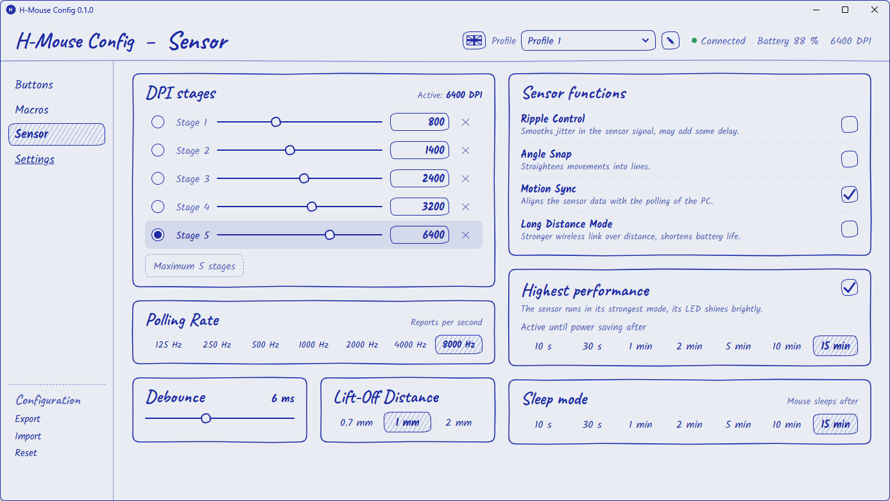
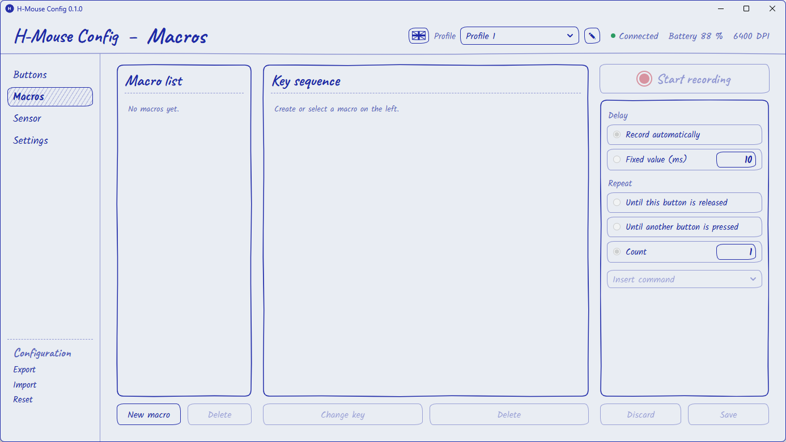
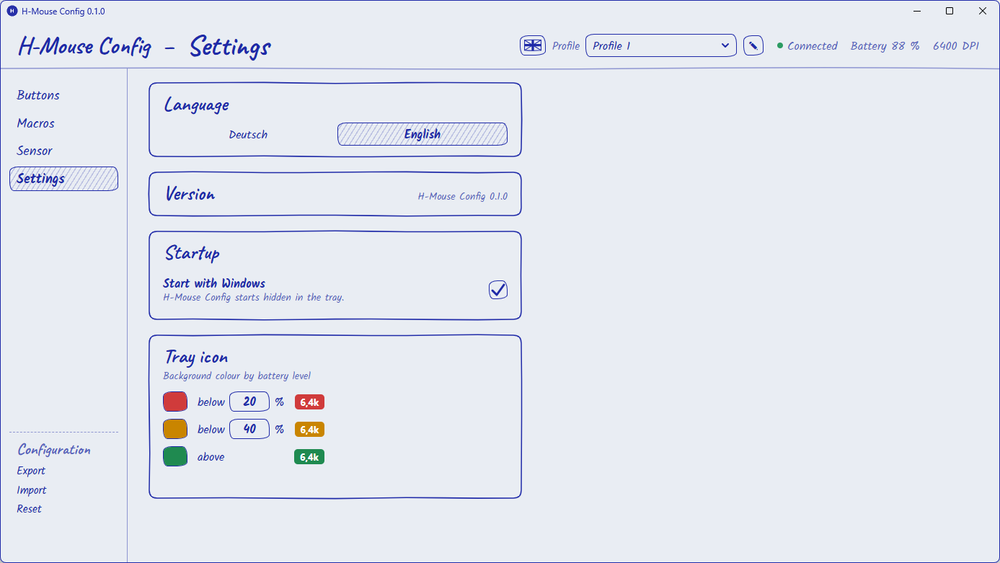
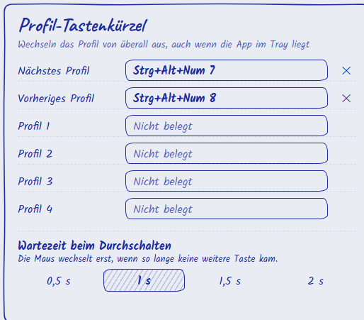
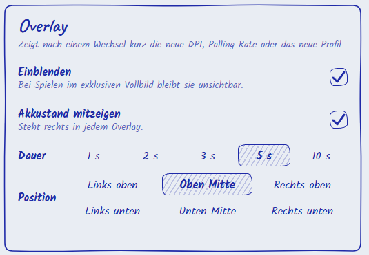
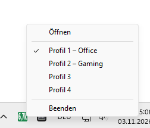

What it does
Buttons and macros
Mouse functions, key combinations, multimedia keys, rapid fire, DPI and polling switch, macros with recording, plus profile switch and DPI lock.
Sensor
DPI stages, polling rate, lift-off distance, debounce, ripple control, angle snapping, motion sync and sleep time.
Four profiles
Give them your own names, copy one profile into others, switch from the tray or with a keyboard shortcut.
Overlay
After a switch a small box shows the new DPI, polling rate or profile, with the battery level, on top of other windows.
Profile hotkeys
Any key combination for the next, previous or a certain profile, with warnings for combinations that other programs use.
Battery
Battery level from a measured voltage curve, time left from your own use, a 7-day chart and Windows notifications.
Tray icon
Shows the active DPI on a background coloured by battery level, starts with Windows and stays out of the way.
Receiver, cable and Bluetooth
Finds the mouse on its own and prefers the cable. Over Bluetooth it shows connection and battery level.
Screenshots






Compared with the vendor's web tool
| H-Mouse Config | Vendor web tool | |
|---|---|---|
| Runs as | Windows app in the tray | page in Chrome, Edge or Opera |
| Profile names | your own names | Profile#01 to #04 |
| Copy a profile | yes | no |
| Profile switch and DPI lock on a button | yes | not offered |
| Profile hotkeys | yes | no |
| Overlay | yes | no |
| Battery time left and history | yes | no |
| Bluetooth status | connection and battery | not supported |
| Firmware updates, pairing a new receiver | not included | yes |
Getting started
- Download the ZIP from the latest release.
- Unpack it anywhere and start
h-mouse-config.exe. The EXE is not signed, so Windows SmartScreen may ask once. - Plug in the receiver or the cable. The app finds the Hypace by itself.
This is an independent project with no connection to Lofree. All trademarks belong to their owners. The app writes settings to the mouse, use it at your own risk.